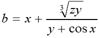

<!DOCTYPE html>

<html lang="en" xmlns="http://www.w3.org/1999/xhtml">
<head>
    <meta charset="utf-8" >
    <title>Руденко Максим - Лабораторная работа 2 Задание 2</title>
</head>

<body>
    <script>
        // Вводим исходные данные
        var x = Number(prompt("Введите значение x"));
        var y = Number(prompt("Введите значение y"));
        var z = Number(prompt("Введите значение z"));

        // Вычисляем значение переменной b по формуле
        var b = x + (Math.pow(z*y, 1/3) / (y + Math.cos(x)));

        // Отображаем результаты
        document.write("Задание: вычислить значение переменной b по формуле:<br>");
        document.write(" <br>");        
        document.write("Результат: b = " + b + "<br>");
        document.write("Разработчик скрипта: Руденко Максим Андреевич");
    </script>
      
</body>
</html>